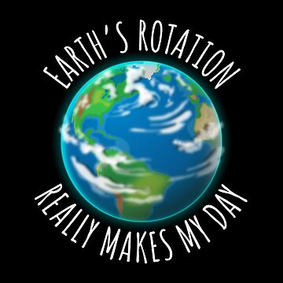

Para saber mas.

Agua. La tierra es el único planeta del que hasta ahora sabemos que hay agua suficiente en estado líquido como para dar soporte a la vida tal y como la conocemos. Podría decirse que el agua hace de nuestro mundo un lugar especial. Sin embargo, siguiendo la máxima de que no existen soluciones sencillas para cuestiones complejas - dónde la vida es quizá la más compleja de todas las cuestiones- bien haríamos en pensar que lo particular de nuestro mundo residiera en más de un solo aspecto.